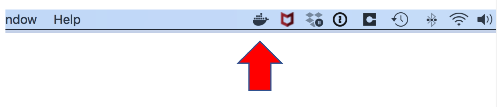
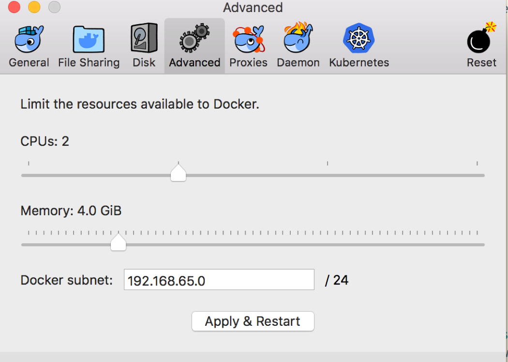
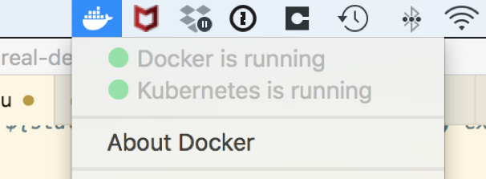

Kubernetesの設定
目次
- Kubernetesを設定するためのチート・シート
- クラウドのベア・コンピュート・リソースでのKubernetesの設定
- 独自のコンピュート・リソースにKubernetesをインストール
- Kubernetesを使用したMac用のDockerのインストール
Kubernetesを設定するためのチート・シート
オペレータを試すためにKubernetes環境を設定する方法については、このページを読み進めてください。 サポートされている環境は、ベア・メタルなどのKubernetesのオンプレミス・インストール、またはOracle Cloud、Microsoft Azure、Google、Amazonなどのクラウド・プロバイダのいずれかです。 クラウド・プロバイダを使用すると、管理コンソールから管理対象Kubernetes環境をプロビジョニングできます。 クラウド上のコンピュート・リソースを使用して、Kubernetesを手動で設定することもできます。 また、開発またはテスト目的に適したKubernetes単一ノード・クラスタを実行する方法もいくつかあります。 次のオプションがあります。
「本番」オプション:
- クラウド上のベア・コンピュート・リソースに独自のKubernetes環境を設定します。
- クラウド・プロバイダの管理コンソールを使用して、管理対象Kubernetes環境をプロビジョニングします。
- Kubernetesを独自のコンピュート・リソース(たとえば、クラウド外部の実際のコンピュータ)にインストールします。
「開発/テスト」オプション:
- Docker for MacまたはDocker for Windowsをインストールし、その埋込みKubernetesクラスタを有効にします。
- Minikube、Minishift、kindなどの他の開発/テスト・オプションを推奨またはサポート「しません」。
次の項では、これらのオプションのヒントをいくつか示します。
クラウドのベア・コンピュート・リソースでのKubernetesの設定
「Oracle Cloud Infrastructure用のTerraform Kubernetesインストーラ」の基本ステップに従います。
前提条件
- Terraform (v0.10.3以降)をダウンロードしてインストールします。
- 「OCI Terraformプロバイダ」 (v2.0.0以降)をダウンロードしてインストールします。
- OCIプロバイダへのパスを指定するTerraform構成ファイルを
~/.terraformrcに作成します:providers { oci = "<path_to_provider_binary>/terraform-provider-oci" } - クラスタとローカルで対話する場合は、kubectlがインストールされていることを確認します。
クイック・スタート
-
Terraform Kubernetesインストーラ・プロジェクトの
git cloneを実行します:$ git clone https://github.com/oracle/terraform-kubernetes-installer.git -
プロジェクトを初期化します:
$ cd terraform-kubernetes-installer$ terraform init -
terraform.tvfarsの例をコピーします:$ cp terraform.example.tfvars terraform.tfvars -
terraform.tvfarsファイルを編集して、テナンシ、ユーザーおよびコンパートメントの値を含めます。 オプションで、変数を編集して、Kubernetesマスターとワーカー、およびetcdクラスタのVMのShapeを変更します。 例えば:#give a label to your cluster to help identify it if you have multiple label_prefix="weblogic-operator-1-" #identification/authorization info tenancy_ocid = "ocid1.tenancy...." compartment_ocid = "ocid1.compartment...." fingerprint = "..." private_key_path = "/Users/username/.oci/oci_api_key.pem" user_ocid = "ocid1.user..." #shapes for your VMs etcdShape = "VM.Standard1.2" k8sMasterShape = "VM.Standard1.8" k8sWorkerShape = "VM.Standard1.8" k8sMasterAd1Count = "1" k8sWorkerAd1Count = "2" #this ingress is set to wide-open for testing **not secure** etcd_ssh_ingress = "0.0.0.0/0" master_ssh_ingress = "0.0.0.0/0" worker_ssh_ingress = "0.0.0.0/0" master_https_ingress = "0.0.0.0/0" worker_nodeport_ingress = "0.0.0.0/0" #create iscsi volumes to store your etcd and /var/lib/docker info worker_iscsi_volume_create = true worker_iscsi_volume_size = 100 etcd_iscsi_volume_create = true etcd_iscsi_volume_size = 50 -
変更のテストおよび適用:
$ terraform plan$ terraform apply -
組込みスクリプト
scripts/cluster-check.shを使用してクラスタをテストします:$ scripts/cluster-check.sh -
SSH秘密キーを出力します:
# output the ssh private key for use later$ rm -f generated/instances_id_rsa && terraform output ssh_private_key > generated/instances_id_rsa && chmod 600 generated/instances_id_rsa -
Kubernetesワーカー・ノード間で共有ストレージが必要な場合は、NFSを有効にして構成します:
現在のGAバージョンでは、OCI Container Engine for Kubernetesは、アクセス権限RWOnceを持つノード間で共有できるネットワーク・ブロック・ストレージをサポートしています(つまり、一方のみが書込み可能で、他方は読取り専用です)。 ドメインを永続ボリュームに配置する場合は、共有ファイル・システムを使用してWebLogicドメイン構成を格納する必要があります。これは、ノード全体のすべてのポッドからアクセスできる必要があります。 Oracleは、Oracle Cloud Infrastructure File Storage Service (または他のクラウド・プロバイダと同等のもの)を使用することをお薦めします。 または、あるノードにNFSサーバーをインストールし、すべてのノードでファイル・システムを共有することもできます。
現在、OCI Container Engine for KubernetesでWebLogic Serverを実行するには、NFSバージョン3.0を使用することをお薦めします。 認証中に、NFS 4.0を使用すると、WebLogicドメイン内のサーバーが断続的に失敗状態になったことがわかりました。 複数のスレッドがNFS (デフォルト・ストア、診断ストア、ノード・マネージャ、ロギングおよびdomain_home)を使用するため、ファイル・ストアへのアクセス時に問題が発生します。 これらの問題は、NFSをバージョン3.0に変更することで解消されます。
$ terraform output worker_public_ips
IP1,
IP2
$ terraform output worker_private_ips
PRIVATE_IP1,
PRIVATE_IP2
$ ssh -i `pwd`/generated/instances_id_rsa opc@IP1
worker-1$ sudo su -
worker-1# yum install -y nfs-utils
worker-1# mkdir /scratch
worker-1# echo "/scratch PRIVATE_IP2(rw)" >> /etc/exports
worker-1# systemctl restart nfs
worker-1# exit
worker-1$ exit
# configure worker-2 to mount the share from worker-1
$ ssh -i `pwd`/generated/instances_id_rsa opc@IP2
worker-2$ sudo su -
worker-2# yum install -y nfs-utils
worker-2# mkdir /scratch
worker-2# echo "PRIVATE_IP1:/scratch /scratch nfs nfsvers=3 0 0" >> /etc/fstab
worker-2# mount /scratch
worker-2# exit
worker-2$ exit
独自のコンピュート・リソースにKubernetesをインストール
たとえば、クラウド外のOracle Linuxサーバーの場合。
これらの手順はOracle Linux 7u2+用です。 別のフレーバのLinuxを使用している場合は、それに応じて調整する必要があります。
これらのステップは、特に指定しないかぎり、rootユーザーで実行する必要があります。 コマンドにYOUR_USERIDが表示されている場合は、それを実際のuseridに置き換える必要があります。
-
DockerおよびKubernetesファイルが格納されるディレクトリを選択します。 Dockerディレクトリは、すべてのイメージおよびコンテナを含む
/var/lib/dockerファイル・システムに使用されるため、多くの空き領域(100GBを超える)があるディスクに配置する必要があります。 Kubernetesディレクトリは、/var/lib/kubeletファイル・システムおよび永続ボリューム・ストレージに使用されます。$ export docker_dir=/scratch/docker$ export k8s_dir=/scratch/k8s_dir -
必要な環境変数を設定するシェル・スクリプトを作成します。 ログイン時に実行されるように、これをユーザーの
.bashrcに追加するだけでよいでしょう。 HTTPプロキシの背後にいる場合は、ここでプロキシ設定を構成する必要もあります:#!/bin/bash export PATH=$PATH:/sbin:/usr/sbin pod_network_cidr="10.244.0.0/16" k8s_dir=$k8s_dir ## grab my IP address to pass into kubeadm init, and to add to no_proxy vars # assume ipv4 and eth0 ip_addr=`ip -f inet addr show eth0 | egrep inet | awk '{print $2}' | awk -F/ '{print $1}'\` export HTTPS_PROXY=http://proxy:80 export https_proxy=http://proxy:80 export NO_PROXY=localhost,127.0.0.1,.my.domain.com,/var/run/docker.sock,$pod_network_cidr,$ip_addr export no_proxy=localhost,127.0.0.1,.my.domain.com,/var/run/docker.sock,$pod_network_cidr,$ip_addr export HTTP_PROXY=http://proxy:80 export http_proxy=http://proxy:80 export KUBECONFIG=$k8s_dir/admin.conf環境変数を設定する次のスクリプトを実行します:
$ . ~/.bashrcコマンドの完了が必要な場合は、次をスクリプトに追加できます:
[ -f /usr/share/bash-completion/bash_completion ] && . /usr/share/bash-completion/bash_completion source <(kubectl completion bash) -
必要なディレクトリを作成します:
$ mkdir -p $docker_dir $k8s_dir/kubelet$ ln -s $k8s_dir/kubelet /var/lib/kubelet -
インストールするDockerバージョンで環境変数を設定します:
$ docker_version="18.09.1.ol" -
Dockerをインストールし、以前にインストールしたバージョンを削除します:
### install docker and curl-devel (for git if needed)$ yum-config-manager --enable ol7_addons ol7_latest# we are going to just uninstall any docker-engine that is installed$ yum -y erase docker-engine docker-engine-selinux# now install the docker-engine at our specified version$ yum -y install docker-engine-$docker_version curl-devel -
Dockerオプションを更新します:
# edit /etc/sysconfig/docker to add custom OPTIONS$ cat /etc/sysconfig/docker | sed "s#^OPTIONS=.*#OPTIONS='--selinux-enabled --group=docker -g $docker_dir'#g" > /tmp/docker.out$ diff /etc/sysconfig/docker /tmp/docker.out$ mv /tmp/docker.out /etc/sysconfig/docker -
必要に応じて、HTTPプロキシ構成を含むDockerネットワークを設定します:
# generate a custom /setc/sysconfig/docker-network$ cat <<EOF > /etc/sysconfig/docker-network # /etc/sysconfig/docker-network DOCKER_NETWORK_OPTIONS="-H tcp://0.0.0.0:4243 -H unix:///var/run/docker.sock" HTTP_PROXY="http://proxy:80" HTTPS_PROXY="http://proxy:80" NO_PROXY="localhost,127.0.0.0/8,.my.domain.com,/var/run/docker.sock" EOF -
dockerグループにユーザーを追加します:$ usermod -aG docker YOUR_USERID -
インストールして構成したDockerサービスを有効にして起動します:
$ systemctl enable docker && systemctl start docker -
Kubernetesパッケージをインストールします:
#!/bin/bash # generate the yum repo config cat <<EOF > /etc/yum.repos.d/kubernetes.repo [kubernetes] name=Kubernetes baseurl=http://yum.kubernetes.io/repos/kubernetes-el7-x86_64 enabled=1 gpgcheck=1 repo_gpgcheck=1 gpgkey=https://packages.cloud.google.com/yum/doc/yum-key.gpg https://packages.cloud.google.com/yum/doc/rpm-package-key.gpg EOF setenforce 0 # install kube* packages v=${1:-1.17.0-0} old_ver=`echo $v | egrep "^1.7"` yum install -y kubelet-$v kubeadm-$v kubectl-$v kubernetes-cni # change the cgroup-driver to match what docker is using cgroup=`docker info 2>&1 | egrep Cgroup | awk '{print $NF}'` [ "$cgroup" == "" ] && echo "cgroup not detected!" && exit 1 cat /etc/systemd/system/kubelet.service.d/10-kubeadm.conf | sed "s#KUBELET_CGROUP_ARGS=--cgroup-driver=.*#KUBELET_CGROUP_ARGS=--cgroup-driver=$cgroup\"#"> /etc/systemd/system/kubelet.service.d/10-kubeadm.conf.out diff /etc/systemd/system/kubelet.service.d/10-kubeadm.conf /etc/systemd/system/kubelet.service.d/10-kubeadm.conf.out mv /etc/systemd/system/kubelet.service.d/10-kubeadm.conf.out /etc/systemd/system/kubelet.service.d/10-kubeadm.conf if [ "$old_ver" = "" ] ; then # run with swap if not in version 1.7* (starting in 1.8, kubelet # fails to start with swap enabled) # cat <<EOF > /etc/systemd/system/kubelet.service.d/90-local-extras.conf [Service] Environment="KUBELET_EXTRA_ARGS=--fail-swap-on=false" EOF fi -
Kubernetesサービスを有効にして起動します:
$ systemctl enable kubelet && systemctl start kubelet -
CNIにFlannelをインストールして使用します:
#!/bin/bash # run kubeadm init as root echo Running kubeadm init --skip-preflight-checks --apiserver-advertise-address=$ip_addr --pod-network-cidr=$pod_network_cidr echo " see /tmp/kubeadm-init.out for output" kubeadm init --skip-preflight-checks --apiserver-advertise-address=$ip_addr --pod-network-cidr=$pod_network_cidr > /tmp/kubeadm-init.out 2>&1 if [ $? -ne 0 ] ; then echo "ERROR: kubeadm init returned non 0" chmod a+r /tmp/kubeadm-init.out exit 1 else echo; echo "kubeadm init complete" ; echo # tail the log to get the "join" token tail -6 /tmp/kubeadm-init.out fi cp /etc/kubernetes/admin.conf $KUBECONFIG chown YOUR_USERID:YOUR_GROUP $KUBECONFIG chmod 644 $KUBECONFIG次のステップは、通常の(
root以外の)ユーザーで実行する必要があります。 -
CNIを構成します:
$ sudo -u YOUR_USERID kubectl create clusterrolebinding permissive-binding --clusterrole=cluster-admin --user=admin --user=kubelet --group=system:serviceaccounts$ sudo -u YOUR_USERID kubectl apply -f https://raw.githubusercontent.com/coreos/flannel/master/Documentation/kube-flannel.ymlこのホストの
Readyがkubectl get nodesに表示されるまで待機します:#!/bin/bash host=`hostname | awk -F. '{print $1}'` status="NotReady" max=10 count=1 while [ ${status:=Error} != "Ready" -a $count -lt $max ] ; do sleep 30 status=`sudo -u YOUR_USERID kubectl get nodes | egrep $host | awk '{print $2}'` echo "kubectl status is ${status:=Error}, iteration $count of $max" count=`expr $count + 1` done status=`sudo -u YOUR_USERID kubectl get nodes | egrep $host | awk '{print $2}'` if [ ${status:=Error} != "Ready" ] ; then echo "ERROR: kubectl get nodes reports status=${status:=Error} after configuration, exiting!" exit 1 fi -
ノードの調整:
$ sudo -u YOUR_USERID kubectl taint nodes --all node-role.kubernetes.io/master-$ sudo -u YOUR_USERID kubectl get nodes$ sudo -u YOUR_USERID kubeadm versionおめでとうございます。 DockerおよびKubernetesがインストールおよび構成されています。
Kubernetesを使用したMac用のDockerのインストール
Docker for Mac 18+は、Macで簡単なテスト環境を設定するための迅速で簡単な方法である「埋込みKubernetes環境」を提供します。 設定するには、次の手順に従います:
-
"Docker for Mac" https://download.docker.com/mac/edge/Docker.dmgをインストールします。 次に、Dockerアプリケーションを起動します(コマンド・スペース・バーを押し、
Dockerと入力して実行します)。 実行後、Dockerアイコンがステータス・バーに表示されます: -
「Docker」アイコンをクリックし、ドロップダウン・メニューから「Preferences…」を選択します。 十分なスペアがある場合は、「Advanced」タブに移動して、Dockerにより多少多くのメモリーを割り当てます:
 -
「Kubernetes」タブに移動し、Kubernetesを有効にするオプションをクリックします:

HTTPプロキシの背後にいる場合は、「プロキシ」タブに移動してプロキシの詳細を入力する必要もあります。
DockerによってKubernetesコンポーネントがダウンロードされ、起動されます。 完了すると、Kubernetesのステータスが緑色になり、メニューで実行中になります:
 -
Mac上の
kubectlが正しいクラスタおよびコンテキストを指していることを確認します。$ kubectl config get-contextsCURRENT NAME CLUSTER AUTHINFO NAMESPACE docker-for-desktop docker-for-desktop-cluster docker-for-desktop kubernetes-admin@kubernetes kubernetes kubernetes-admin$ kubectl config use-context docker-for-desktopSwitched to context "docker-for-desktop".$ kubectl config get-clustersNAME kubernetes docker-for-desktop-cluster$ kubectl config set-cluster docker-for-desktop-clusterCluster "docker-for-desktop-cluster" set. -
この例に示すように、
127.0.0.1の/etc/hostsファイル・エントリにdocker-for-desktopを追加する必要があり、このファイルを編集するには管理ユーザーである必要があります:## # Host Database # # localhost is used to configure the loopback interface # when the system is booting. Do not change this entry. ## 127.0.0.1 localhost docker-for-desktop 255.255.255.255 broadcasthost ::1 localhost -
次のコマンドを入力して、証明書を無視するように
kubectlに指示する必要がある場合もあります:$ kubectl config set-cluster docker-for-desktop --insecure-skip-tls-verify=true -
次に、次のコマンドを入力して、DockerでKubernetesと通信していることを確認します:
$ kubectl cluster-infoKubernetes master is running at https://docker-for-desktop:6443 To further debug and diagnose cluster problems, use 'kubectl cluster-info dump'.永続ボリュームに関する重要なノート
Docker for Macには、永続ボリュームのHostPathとして使用できるディレクトリを配置できる場所にいくつかの制限があります。 これを単純にするには、ディレクトリを/Usersの下に配置します。